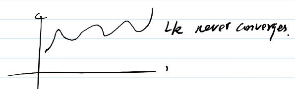

稳态 LQR 与 KF 对偶性
从时变增益到恒定增益、能控性能观性条件、LQR 与 Kalman Filter 的对偶关系
🎯 学完本节，你应能
- 理解时变增益 LQR 的实际局限
- 解释稳态 LQR 的收敛条件（能控+能观）
- 推导并求解代数 Riccati 方程（ARE）
- 发现 LQR 与 Kalman Filter 之间的对偶关系
🔑 核心思想
上节推导的时变增益 LQR 需要预先计算并存储所有 $L_k$——当 $N$ 很大时这不可行。但若 $(A,B)$ 能控、$(A,\sqrt{Q})$ 能观，$L_k$ 会收敛到常数 $L$。更妙的是，LQR 与 KF 在数学结构上完全对偶：KF 的协方差递推就是 LQR 的 Riccati 方程的转置版本。
📖 目录
1. 时变增益的问题
上节我们推导了完整的时变 LQR 解：
⚠️ 实际问题：必须提前计算出并存储所有 $L_0, L_1, \dots, L_{N-1}$ 才能在系统开始运行时施加控制。如果 $N$ 非常大（例如 $N = 10^6$），这既不现实也没必要。
观察上节的数值例子，$L_k$ 随着逆向递推快速收敛到常数。这引出一个自然的想法：能否在 $N$ 足够大时直接用稳态增益 $L$ 替代所有时变 $L_k$？

2. 稳态 LQR 与收敛条件
2.1 收敛直觉
考虑 Riccati 逆向递推：
当 $N$ 足够大时，从初始值 $P_N = Q$ 出发，经过若干步逆向迭代后，$P_k$ 趋于一个稳态值 $P$。这个 $P$ 满足：
这与 KF 中协方差向前收敛到稳态的直觉完全对称——只是方向相反。
2.2 收敛条件
📐 定理：LQR Riccati 收敛条件
- $(A, B)$ 能控（controllable）
- $(A, \sqrt{Q})$ 能观（observable），其中 $\sqrt{Q}$ 满足 $(\sqrt{Q})^\top \sqrt{Q} = Q$
在这两个条件下，从任意 $P_N \geq 0$ 出发，逆向 Riccati 递推都收敛到唯一正定稳态解 $P$。
控制视角：能控性 $(A,B)$
系统能够被控制从任意初始状态驱动到任意目标状态。若 $(A,B)$ 不能控，则存在不可控子空间——Riccati 方程在该子空间上没有确定解。
观测视角：能观性 $(A,\sqrt{Q})$
所有状态分量都在代价函数中被观测到。如果某些状态方向在 $Q$ 中没有权重（$q_i = 0$），它们可以被任意驱动而不被惩罚——控制器对这些方向是"盲"的。
3. 代数 Riccati 方程（ARE）
3.1 定义
当 $N \to \infty$（无限时域 LQR），Riccati 方程退化为代数方程：
📐 DARE（离散时间代数 Riccati 方程）
$$ P = A^\top P A + Q - A^\top P B (B^\top P B + R)^{-1} B^\top P A $$这是一个关于 $P$ 的矩阵方程，不是递推——需要直接求解。
3.2 求解方法
求解 ARE 的常见方法：
🔧 ARE 求解方法
- 迭代法：从 $P_N = Q$ 开始逆向递推，直到 $\|P_{k+1} - P_k\| < \varepsilon$——最简单、最可靠
- Schur 法：构造 $2n \times 2n$ 的 Hamiltonian 矩阵，取 stable invariant subspace——适用于高维系统
- 代数求解：Python/Matlab 的
scipy.linalg.solve_discrete_are/dlqr
3.3 稳态增益
一旦求得 $P$，稳态最优增益为：
最优控制律简化为：$u_k^* = -L x_k$——恒定增益状态反馈！
4. LQR 与 Kalman Filter 的对偶性
这是一个本课程最"漂亮"的发现之一：LQR 和 KF 在数学结构上完全对偶。
4.1 结构对比
| 概念 | Kalman Filter（估计） | LQR（控制） |
|---|---|---|
| 系统 | $x_{k+1} = A x_k + w_k$ | $x_{k+1} = A x_k + B u_k$ |
| 量测/代价 | $y_k = C x_k + v_k$ | $J = \sum (x_k^\top Q x_k + u_k^\top R u_k)$ |
| 协方差递推 | $P_{k+1|k} = A P_{k|k-1} A^\top + Q$ $\qquad - A P_{k|k-1} C^\top (C P_{k|k-1} C^\top + R)^{-1} C P_{k|k-1} A^\top$ |
$P_k = A^\top P_{k+1} A + Q$ $\qquad - A^\top P_{k+1} B (B^\top P_{k+1} B + R)^{-1} B^\top P_{k+1} A$ |
| 增益 | $K_k = P_{k|k-1} C^\top (C P_{k|k-1} C^\top + R)^{-1}$ | $L_k = (B^\top P_{k+1} B + R)^{-1} B^\top P_{k+1} A$ |
| 更新 | $\hat{x}_{k|k} = \hat{x}_{k|k-1} + K_k (y_k - C \hat{x}_{k|k-1})$ | $u_k = -L_k x_k$ |
| 收敛条件 | $(A, C)$ 能观，$(A, \sqrt{Q})$ 能控 | $(A, B)$ 能控，$(A, \sqrt{Q})$ 能观 |
4.2 对偶对应关系
🔄 对偶映射
如果将 KF 中的以下替换应用到 LQR：
则 KF 的协方差前向递推 完全相同 于 LQR 的 Riccati 逆向递推！

4.3 这个对偶为什么重要？
✅ 理论意义
控制（通过反馈影响状态）和估计（从噪声数据中推断状态）是同一枚硬币的两面。学会 KF 就等于学会了 LQR 的一半。
💡 实用意义
很多控制系统的设计流程为：先用 LQR 设计控制器（假设完全状态反馈），再用 KF 估计不可直接量测的状态——两者结合为 LQG（线性二次型高斯） 控制器。
5. 综合对比与总结
5.1 LQR 设计要点
📋 LQR 设计流程
- 建模：确定系统矩阵 $(A, B)$
- 选权：选择 $Q \geq 0$ 和 $R > 0$（通常 $Q = C^\top C$，$R = \rho I$）
- 验证：检查 $(A, B)$ 能控，$(A, \sqrt{Q})$ 能观
- 求解：解 ARE 得到 $P$
- 计算：$L = (B^\top P B + R)^{-1} B^\top P A$
- 应用：$u_k = -L x_k$
5.2 与 KF 的联合使用（LQG）
这是分离原理（Separation Principle）的体现：最优控制律的设计可以和状态估计解耦——先用 KF 得到最优估计 $\hat{x}_k$，然后代入 LQR 控制律 $u_k = -L \hat{x}_k$。
📝 练习与自测
1️⃣ 验证对偶性
写出 KF 的协方差递推方程，然后做替换 $A \to A^\top, C \to B^\top$，验证是否得到 LQR 的 Riccati 方程。
2️⃣ 能控性检验
$A = \begin{bmatrix} 1 & 1 \\ 0 & 1 \end{bmatrix}, B = \begin{bmatrix} 0 \\ 1 \end{bmatrix}$，检验 $(A, B)$ 是否能控。
3️⃣ 稳态增益计算
对标量系统 $a = 0.9, b = 1, r = 0.1$，求代数 Riccati 方程的解 $p$ 和稳态增益 $L$。
施老师大课堂 · 研讨会系列 KF L20(2/2) · 稳态 LQR 与 KF 对偶性
板书来源：KF L20 · 研讨会系列 25 · 施凌老师